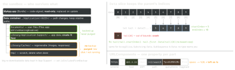

ios-platform · folio
In one line: Most Foundation bugs come from doing by hand what a type already does
correctly: build URLs with URLComponents, format numbers with a
formatter/.formatted, convert with Measurement — and respect
the sandbox lifecycle: Caches and tmp are purgeable, the container path
changes, Data slices keep their parent’s indices.
Download PDF Print view LaTeX source


How it works
- URL = parsed, immutable.
URL(string:)isnilon invalid input (iOS 17+: percent-encodes it instead, RFC 3986 — differs by OS). Files:URL(filePath:)(iOS 16), notURL(string: "/p"). - URLComponents = builder: set
scheme/host/path/queryItems, read.url; never interpolate input into a URL string.percentEncodedQueryItems(iOS 11) when you encode yourself. - Data — value type, COW,
Hashableby content; base64 built in, hex not.Data(contentsOf:)is synchronous — files only, never network. Write with[.atomic, .completeFileProtection]. - Directories (iOS 16 statics) —
URL.documentsDirectory,.applicationSupportDirectory,.cachesDirectory,.temporaryDirectory; before:FileManager.urls(for:in:). App Support may not exist yet:createDirectory. Extensions share an App Group container. - NSCache — thread-safe; evicts under memory pressure; limits are hints; keys/values must be classes; keys not copied; not enumerable, not
Codable— a memory tier, never storage.Dictionary: deterministic, value keys, but unbounded and needs a lock/actor. - Measurement —
Measurement(value: 5, unit: UnitLength.kilometers).converted(to: .miles);.formatted(.measurement(width: .abbreviated, usage: .road))picks km/mi by locale. - Numbers — money is
Decimal;.formatted(.currency(code: "EUR"));0.25.formatted(.percent)→ “25%”. Locale decides layout, not which currency — setcurrencyCode. - UUID — v4, 122 random bits: idempotency keys, local ids;
uuidStringis uppercase.identifierForVendorresets when the vendor’s last app goes. - Bundle — read-only; SPM:
Bundle.module; test resources:Bundle(for: Self.self), not.main(the host app). - NotificationCenter vs KVO — broadcast by name vs one
@objc dynamicproperty; keep and remove the token either way.
Example
var c = URLComponents(string: "https://api.example.com/search")!
c.queryItems = [URLQueryItem(name: "q", value: "a b+c")]
c.percentEncodedQuery = c.percentEncodedQuery? // form servers
.replacingOccurrences(of: "+", with: "%2B") // read + as space
let url = c.url! // ...search?q=a%20b%2Bc
let tail = data[5...] // startIndex 5, not 0
let head = tail[tail.startIndex] // or Data(tail)[0]
var dir = URL.applicationSupportDirectory // iOS 16
var rv = URLResourceValues(); rv.isExcludedFromBackup = true
try dir.setResourceValues(rv) // needs var
let price = Decimal(string: "19.99")! // not 19.99
price.formatted(.currency(code: "EUR")) // "19,99 €" in de_DETraps
+in a query value (base64, phone numbers) —URLComponentsleaves it; a form-decoding server reads a space. Encode it as%2B.slice[0]onData/ArraySlice— indices are the parent’s.- Storing an absolute file path — the container UUID changes on update/restore.
- Images “vanish” from
Caches/— that is the contract; persistent data belongs in Application Support. Decimal(19.99)goes throughDouble: already inexact; useDecimal(string:)or integer minor units.numberStyle = .currencyalone shows$for a euro amount on a US phone — bindcurrencyCode.- Relying on
NSCachekeeping a value or honouringcountLimitexactly.
File protection — when can the file be read?
.complete | only while the device is unlocked |
.completeUnlessOpen | new files writable locked; open stays open |
.completeUntilFirstUserAuthentication | after first unlock — default |
.none | always |
[1pt] Set per write (
Data.WritingOptions .completeFileProtection…) or as a
FileProtectionType attribute; background work that reads .complete files
while locked fails.